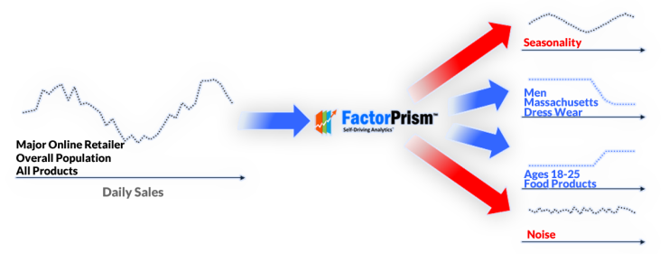

Meet the self-driving car of analytics
FactorPrism™ is revolutionary machine learning software that automatically isolates meaningful performance segments in sales data.
Download for Free
DownloadFactorPrism Illustrated
Why spend days hunting for those meaningful performance patterns? FactorPrism uses advanced, proprietary machine learning algorithms to find them automatically and effortlessly, while teasing out seasonality and noise.
New York City archives all of its 311 complaint calls in an open access system, and invites the community to help discover patterns. The data taxonomy includes many dimensions across agency, complaint type, and location hierarchies, and included over 30 million records.
Using FactorPrism™, in less than an hour we were able to mine this data to find a number of highly meaningful but hidden patterns, including a large relative decline in complaints concerning the housing authority, as well as strong seasonal spikes in water and pothole complaints.
This analysis serves as an important benchmark of the value FactorPrism™ can bring in automatically analyzing call center data in areas like emergency services and customer service.
FactorPrism is a One of a Kind, Best of It's Kind Solution